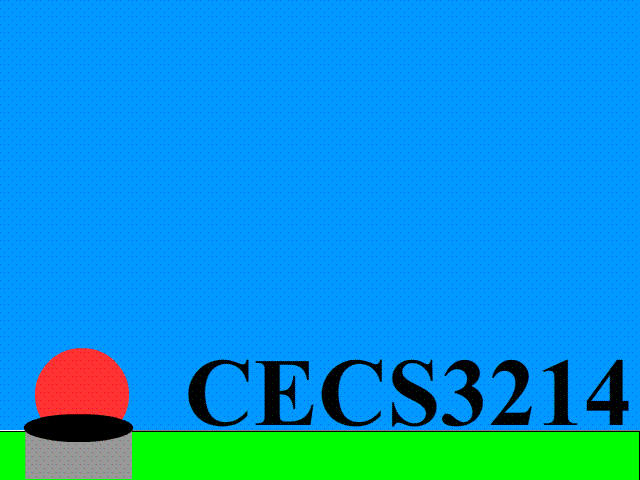

Adobe Animations
These are some of the animations I created for my CECS3214 homework #3
Frame by frame animation
This is a frame by frame animation

Shape Tween
This is a motion tween with a shape I created using adobe animate and a text box displaying the tittle of the class.
Motion tween
This is a motion tween I create that looks like a shooring star